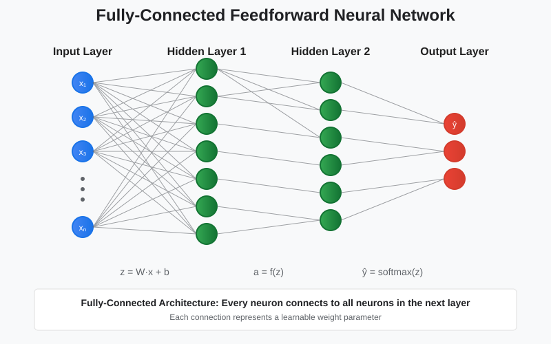
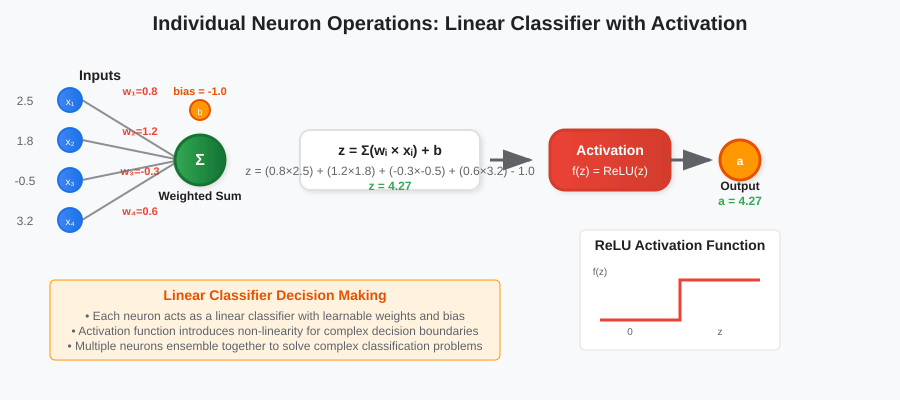
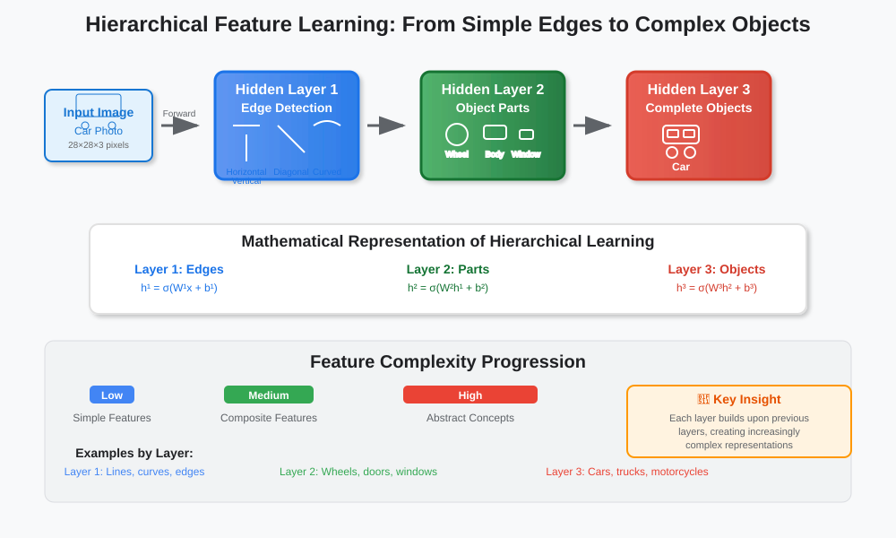
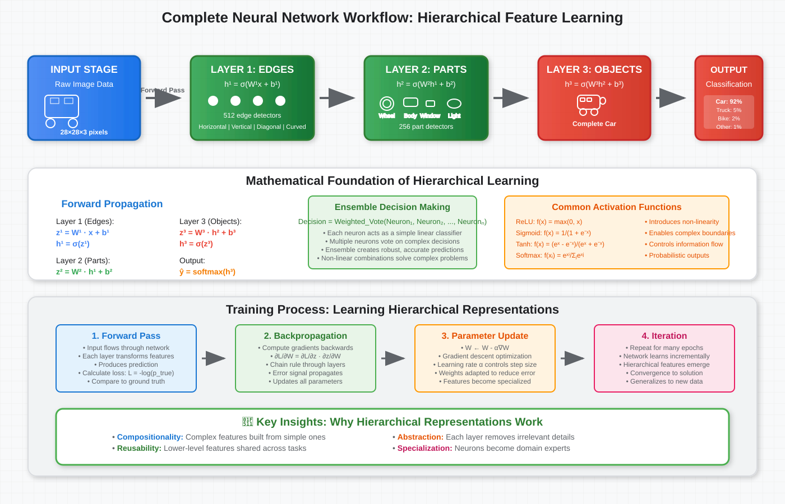
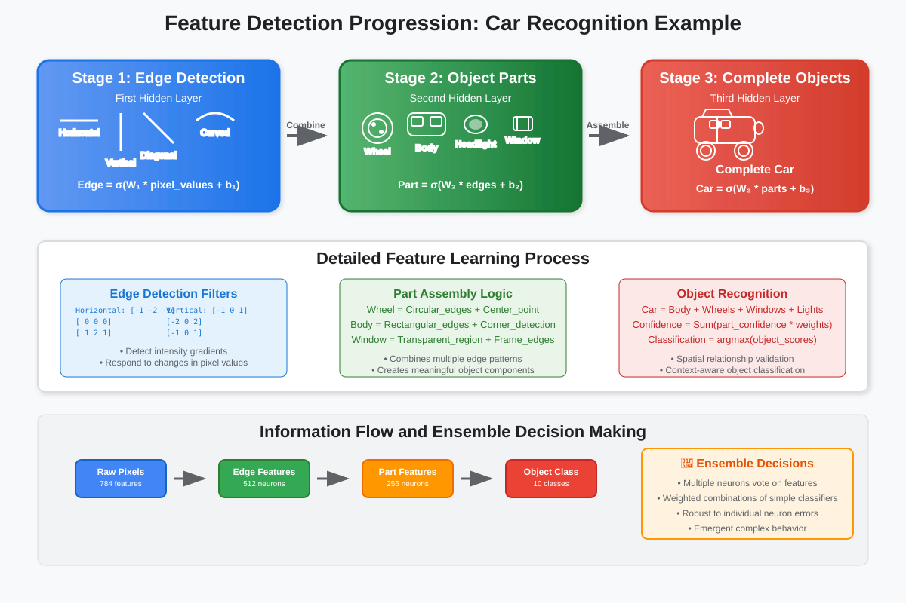

Hierarchical Representations: Multiple Layers in Neural Networks
🧭 Quick Navigation
- Introduction
- Neural Network Architecture
- Hierarchical Learning Process
- Feature Detection Layers
- Mathematical Foundation
- Practical Applications
- Model Comparisons
- Implementation Examples
- References & Further Reading
📖 Introduction
Hierarchical representations form the backbone of deep learning, enabling neural networks to learn complex patterns by breaking them down into simpler, manageable components. In fully-connected feedforward neural networks, this hierarchical learning occurs through multiple hidden layers, where each layer builds upon the representations learned by the previous layer.

The key insight is that each neuron in a hidden layer acts as a linear classifier, making simple decisions that, when combined, solve complex problems through ensemble learning.
🏗️ Neural Network Architecture
Fully-Connected Structure
In a fully-connected feedforward neural network:
- Every neuron in a hidden layer connects to all neurons in the next layer
- Every neuron in a hidden layer receives input from all neurons in the previous layer
- Each connection has an associated weight parameter
Neuron Functionality
Each hidden layer neuron performs the following operations:
Where: - \(z\) = weighted sum of inputs - \(w_i\) = weight for input \(i\) - \(x_i\) = input value \(i\) - \(b\) = bias term - \(f(z)\) = activation function - \(a\) = neuron output

🔄 Hierarchical Learning Process
The Learning Hierarchy
The power of deep neural networks lies in their ability to learn hierarchical representations. Each layer learns increasingly complex features:

Layer-by-Layer Feature Evolution
| Layer Level | Feature Complexity | Example (Car Image) |
|---|---|---|
| Layer 1 | Simple edges | Horizontal/vertical lines, curves |
| Layer 2 | Object parts | Wheels, doors, windows |
| Layer 3 | Complete objects | Entire car, truck, motorcycle |
| Layer N | Scene understanding | Traffic scenarios, parking lots |

↩ Back to Top🔍 Feature Detection Layers
First Hidden Layer: Edge Detection
The first hidden layer typically learns to detect basic edges and simple patterns:
- Horizontal edges - detecting the top/bottom of objects
- Vertical edges - detecting the sides of objects
- Diagonal edges - detecting angled features
- Curves - detecting rounded components
Example with car image: - Outer lines of the car body - Edges of wheels and tires - Window boundaries - Door separations
Second Hidden Layer: Object Parts
The second layer combines edges to form meaningful object components:
Car image examples: - Wheels - circular combinations of edges - Car body - rectangular edge combinations - Windows - specific geometric patterns - Headlights - circular/oval features
Third Hidden Layer: Complete Objects
The third layer assembles object parts into complete, recognizable objects:
Final recognition: - Entire car - combination of wheels + body + windows - Vehicle type - sedan, SUV, truck classification - Orientation - front view, side view, angle

📐 Mathematical Foundation
Forward Propagation
For a network with \(L\) layers:
For \(l = 1, 2, ..., L\)
Ensemble Decision Making
Each layer makes decisions by combining multiple neuron outputs:
Where: - \(m\) = number of neurons in the layer - \(w_j\) = weight for neuron \(j\) - \(\sigma\) = activation function (sigmoid, ReLU, tanh)
Feature Hierarchy Mathematics
The hierarchical feature learning can be expressed as:
This recursive relationship enables increasingly complex feature learning.
🚀 Practical Applications
Computer Vision
- Image Classification - Object recognition in photos
- Medical Imaging - Tumor detection, X-ray analysis
- Autonomous Vehicles - Road sign recognition, obstacle detection
- Security Systems - Face recognition, surveillance monitoring
Natural Language Processing
- Sentiment Analysis - Opinion mining from text
- Machine Translation - Language-to-language conversion
- Text Classification - Document categorization
- Named Entity Recognition - Identifying people, places, organizations
Industry Applications
| Industry | Application | Hierarchical Features |
|---|---|---|
| Healthcare | Medical imaging | Pixels → Edges → Organs → Diagnosis |
| Automotive | Self-driving cars | Pixels → Lines → Objects → Scene understanding |
| Finance | Fraud detection | Transactions → Patterns → Anomalies → Risk assessment |
| Retail | Recommendation systems | Items → Categories → Preferences → Recommendations |
📊 Model Comparisons
Architecture Comparison
| Model Type | Layers | Connections | Best Use Case | Computational Cost |
|---|---|---|---|---|
| Shallow Networks | 1-2 hidden | Fully connected | Simple classification | Low |
| Deep Networks | 3+ hidden | Fully connected | Complex pattern recognition | Medium |
| Convolutional Networks | Many | Locally connected | Image processing | High |
| Transformer Networks | Many | Attention-based | Sequential data | Very High |
Performance Characteristics
# Typical accuracy improvements with depth
Layer_Count = [1, 2, 3, 4, 5, 6+]
Accuracy = [75%, 82%, 87%, 91%, 93%, 95%+]
Training_Time = [1x, 2x, 4x, 8x, 16x, 32x+]
💻 Implementation Examples
Google Colab Integration

Basic PyTorch Implementation
import torch
import torch.nn as nn
import torch.nn.functional as F
class HierarchicalNN(nn.Module):
def __init__(self, input_size, hidden_sizes, num_classes):
super(HierarchicalNN, self).__init__()
# Create layers dynamically
layers = []
prev_size = input_size
for hidden_size in hidden_sizes:
layers.append(nn.Linear(prev_size, hidden_size))
layers.append(nn.ReLU())
layers.append(nn.Dropout(0.2))
prev_size = hidden_size
# Output layer
layers.append(nn.Linear(prev_size, num_classes))
self.network = nn.Sequential(*layers)
def forward(self, x):
return self.network(x)
# Example usage
model = HierarchicalNN(
input_size=784, # 28x28 image
hidden_sizes=[512, 256, 128], # 3 hidden layers
num_classes=10 # 10 digit classes
)
TensorFlow/Keras Implementation
import tensorflow as tf
from tensorflow.keras import layers, models
def create_hierarchical_model(input_shape, hidden_sizes, num_classes):
model = models.Sequential()
# Input layer
model.add(layers.Flatten(input_shape=input_shape))
# Hidden layers with hierarchical learning
for i, hidden_size in enumerate(hidden_sizes):
model.add(layers.Dense(
hidden_size,
activation='relu',
name=f'hierarchical_layer_{i+1}'
))
model.add(layers.Dropout(0.2))
# Output layer
model.add(layers.Dense(num_classes, activation='softmax'))
return model
# Create model
model = create_hierarchical_model(
input_shape=(28, 28),
hidden_sizes=[512, 256, 128],
num_classes=10
)
Hugging Face Models
Pre-trained hierarchical models: - ResNet-50 - Image classification - BERT-base - Text understanding - ViT-base - Vision transformer
📚 References & Further Reading
📖 Foundational Papers
- "Deep Learning" by Ian Goodfellow, Yoshua Bengio, and Aaron Courville
- Book Website
-
Comprehensive coverage of hierarchical representations
-
"ImageNet Classification with Deep Convolutional Neural Networks" - Krizhevsky et al.
- ArXiv Paper
-
Breakthrough paper demonstrating hierarchical learning in CNNs
-
"Visualizing and Understanding Convolutional Networks" - Zeiler & Fergus
- ArXiv Paper
- Excellent visualization of hierarchical feature learning
🔬 Research Resources
- "Feature Visualization" - Distill.pub
- Interactive Article
-
Understanding what neural networks learn at each layer
-
"The Building Blocks of Interpretability" - Distill.pub
- Research Article
- Deep dive into hierarchical representations
💻 Practical Resources
- PyTorch Deep Learning Tutorials
- Official Documentation
-
Hands-on implementation guides
-
TensorFlow Model Garden
- GitHub Repository
-
Production-ready hierarchical models
-
Papers with Code - Neural Networks
- Website
- Latest research with code implementations
🎯 Key Takeaways
- Hierarchical learning enables complex pattern recognition through layer-by-layer abstraction
- Each layer builds upon previous layers, learning increasingly sophisticated features
- Ensemble decisions from multiple neurons solve complex classification problems
- Mathematical foundation based on weighted combinations and activation functions
- Real-world applications span computer vision, NLP, and many other domains